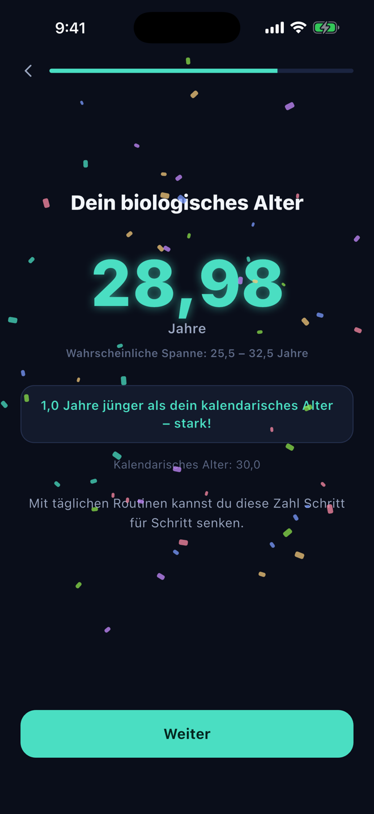
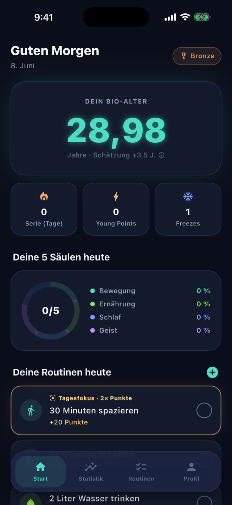
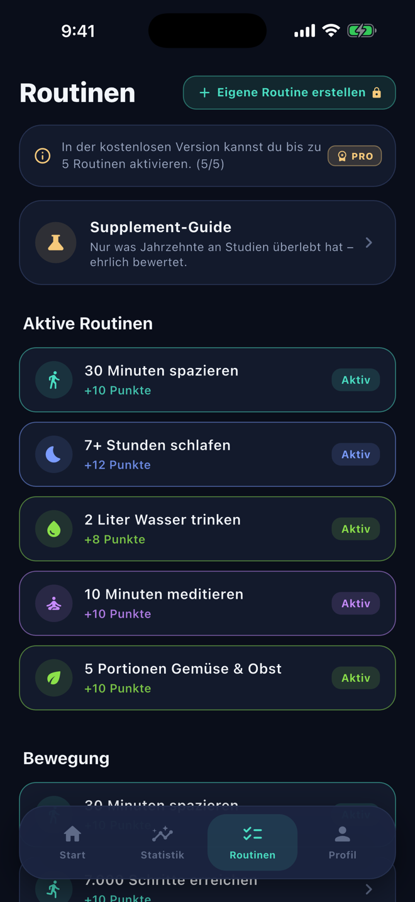
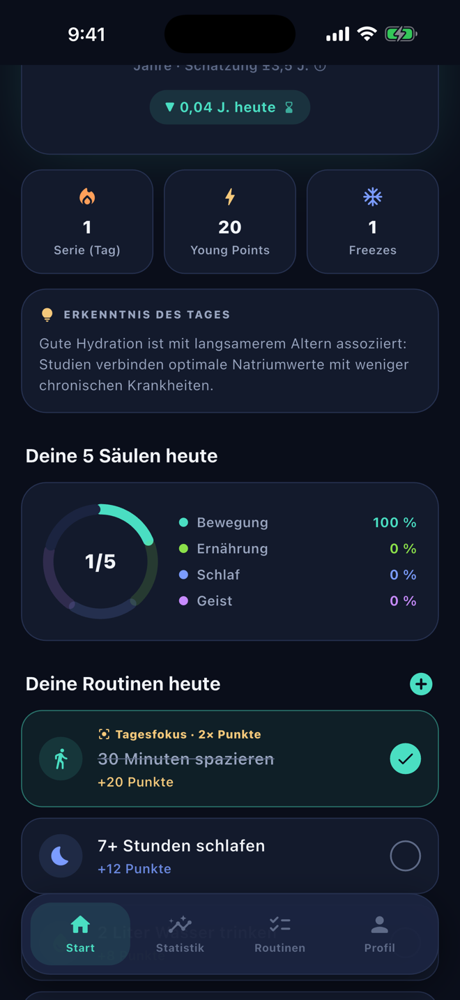

Wie alt bist du
wirklich?
Finde in unter 2 Minuten heraus, wie alt dein Körper wirklich ist – und sieh die Zahl mit jeder gesunden Gewohnheit sinken. Kostenlos, kein Konto.
- ✓ Kostenlose Bio-Alter-Schätzung
- ✓ Kein Konto nötig
- ✓ 100 % lokale Daten
7 evidenzbasierte Faktoren aus der Langlebigkeitsforschung
- Schlaf
- Bewegung
- Ernährung
- BMI
- Stress
- Rauchen
- Soziale Kontakte
Basierend auf anerkannter Langlebigkeitsforschung – u. a. Telomere, kardiorespiratorische Fitness und Studien zu sozialer Verbundenheit.
So funktioniert’s
Von der ersten Schätzung zu besseren Gewohnheiten – in drei Schritten.
Schätzung erhalten
Beantworte ein paar Fragen zu Schlaf, Bewegung, Ernährung & Co. – und erhalte kostenlos dein geschätztes biologisches Alter.
Routinen abhaken
Wähle aus 24 wissenschaftlich begründeten Routinen. Jeder Haken bringt Young Points – und senkt deine Zahl sichtbar.
Deine Zahl sinken sehen
Verfolge deinen Verlauf, halte deine Serie mit Freeze-Tagen am Leben und sieh in der Projektion, wohin deine Schätzung in 90 Tagen gehen kann.
Sieh dir die App an
Von der ersten Schätzung bis zur täglichen Routine – so fühlt sich Young by Yount an.




Die 5 Säulen der Langlebigkeit
Ganzheitlich statt einseitig – deine Routinen decken alles ab, was dein biologisches Alter beeinflusst.
Bewegung
Spazieren, Kraft & Zone-2-Cardio – das Training deiner Zellkraftwerke.
Ernährung
Gemüse, Protein, Essenspausen – weniger Entzündung, mehr Reparatur.
Schlaf
Im Tiefschlaf erholt und repariert sich dein Körper. Wir helfen dir, ihn zu schützen.
Geist
Meditation, Lesen, Atemübungen – weniger Cortisol, längere Telomere.
Soziales
Gute Beziehungen sind der stärkste Prädiktor für ein langes Leben.
Dein chronologisches Alter.
Wird zu deinem biologischen.
Mehr als ein Habit-Tracker
Jede Funktion ist darauf ausgelegt, dass du dranbleibst.
Lebendige Zahl
Dein Bio-Alter ist keine starre Testzahl – es reagiert auf jeden einzelnen Haken. Sofort.
Warum es wirkt
Jede Routine erklärt verständlich, was sie in deinem Körper bewirkt – kein blindes Abhaken.
Serien mit Herz
Freeze-Tage schützen deine Serie, wenn das Leben dazwischenkommt. Motivation statt Bestrafung.
Young Ranks
Von Bronze bis „Ageless“ – deine Young Points erzählen deine Fortschrittsgeschichte.
90-Tage-Projektion
Sieh heute, wo deine Schätzung in drei Monaten stehen kann, wenn du dein Tempo hältst.
Beispiel · Projektion100 % privat
Alle Daten bleiben auf deinem Gerät. Kein Konto, keine Cloud, keine Weitergabe. Punkt.
Fair & transparent
Der Kern ist kostenlos. Premium schaltet alles frei.
Kostenlos
- Bio-Alter-Schätzung
- Bis zu 5 aktive Routinen
- Young Points, Serien & Ränge
- Wöchentlicher Check-in
Premium
- Unbegrenzt viele Routinen
- Kompletter Katalog (24 Routinen)
- Eigene Routinen erstellen
- 90-Tage-Projektion
- Detaillierte Statistiken
FAQ
Wie wird mein biologisches Alter berechnet?
Aus deinen Angaben zu Körper und Lebensstil (u. a. BMI, Schlaf, Bewegung, Rauchen, Stress, Ernährung, soziale Kontakte) – basierend auf allgemein anerkannten Zusammenhängen aus der Langlebigkeitsforschung. Es ist eine motivierende Schätzung, kein Laborwert und kein medizinisches Gutachten.
Sinkt meine Zahl wirklich durch Abhaken?
Ja – deine Young Points senken die angezeigte Schätzung mit abnehmendem Grenznutzen, gedeckelt bei mehreren Jahren. Das bildet ab, was Studien nahelegen: Konsequente Gewohnheiten gehen mit jüngeren biologischen Markern einher – aber niemand wird wieder 18.
Was passiert mit meinen Daten?
Nichts. Sie bleiben auf deinem Gerät. Es gibt kein Konto, keinen Server und keine Analyse-Tracker. Löschst du die App, sind die Daten weg.
Was kostet die App?
Die Kern-App ist kostenlos – inklusive Schätzung, 5 Routinen, Punkten und Serien. Premium (4,99 €/Monat, 29,99 €/Jahr oder 79,99 € einmalig) schaltet den vollen Katalog, eigene Routinen und die Projektion frei.
Ersetzt die App einen Arzt?
Nein. Young by Yount ist ein Motivations-Werkzeug für einen gesünderen Alltag. Bei gesundheitlichen Fragen oder vor größeren Lebensstil-Änderungen sprich bitte mit einer Ärztin oder einem Arzt.
Dein zukünftiges Ich fängt heute an.
Hol dir deine kostenlose Bio-Alter-Schätzung – in unter 2 Minuten.
Jetzt kostenlos starten